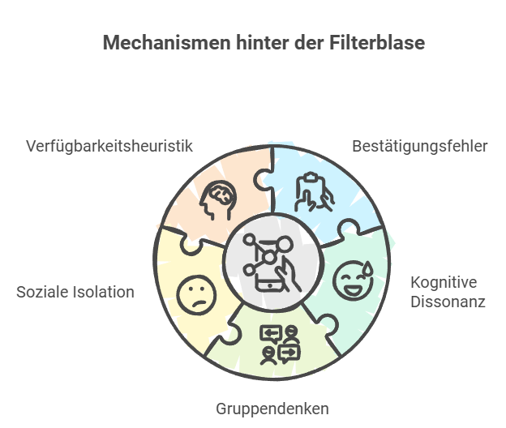
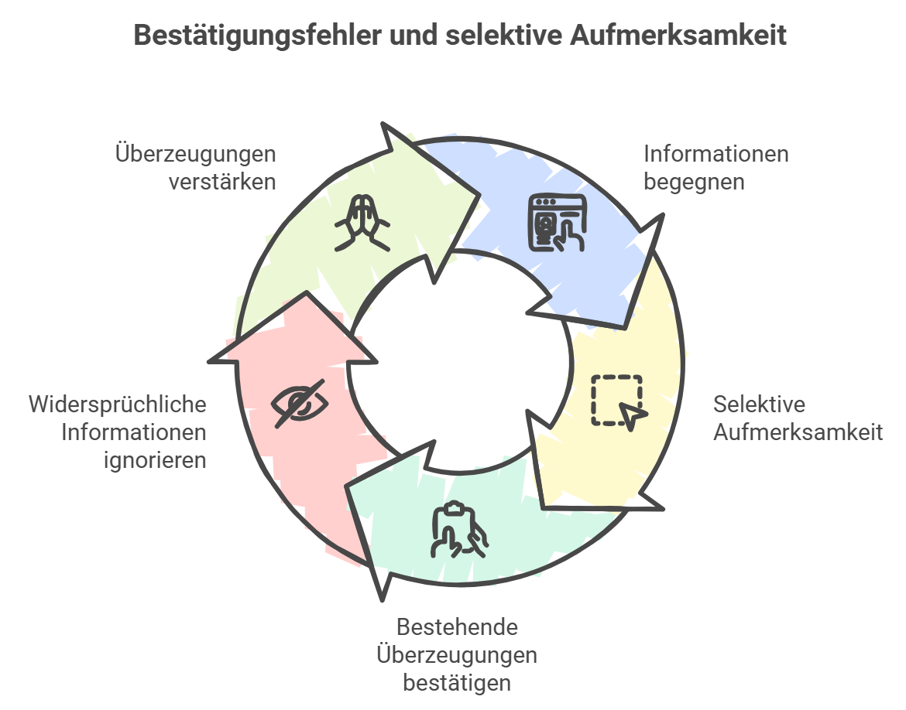
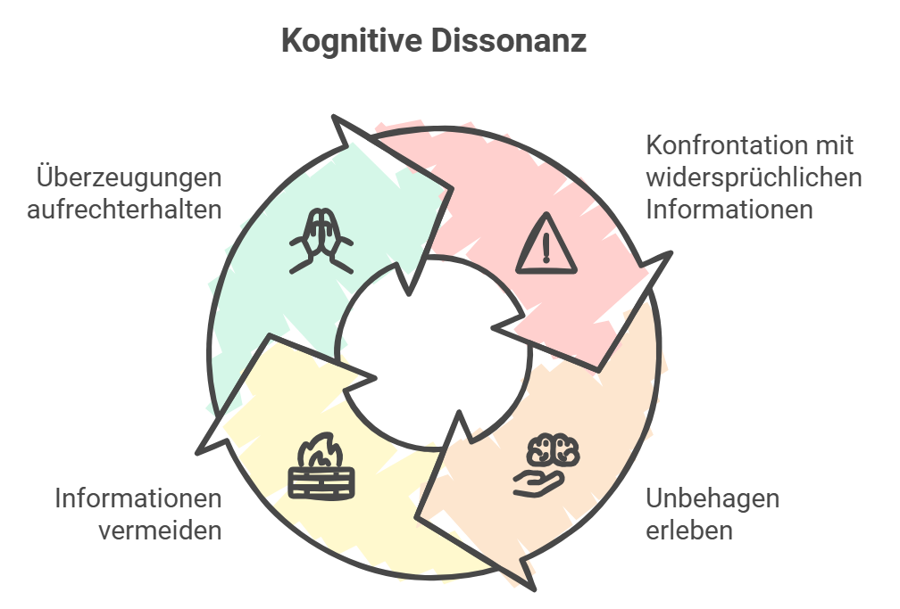
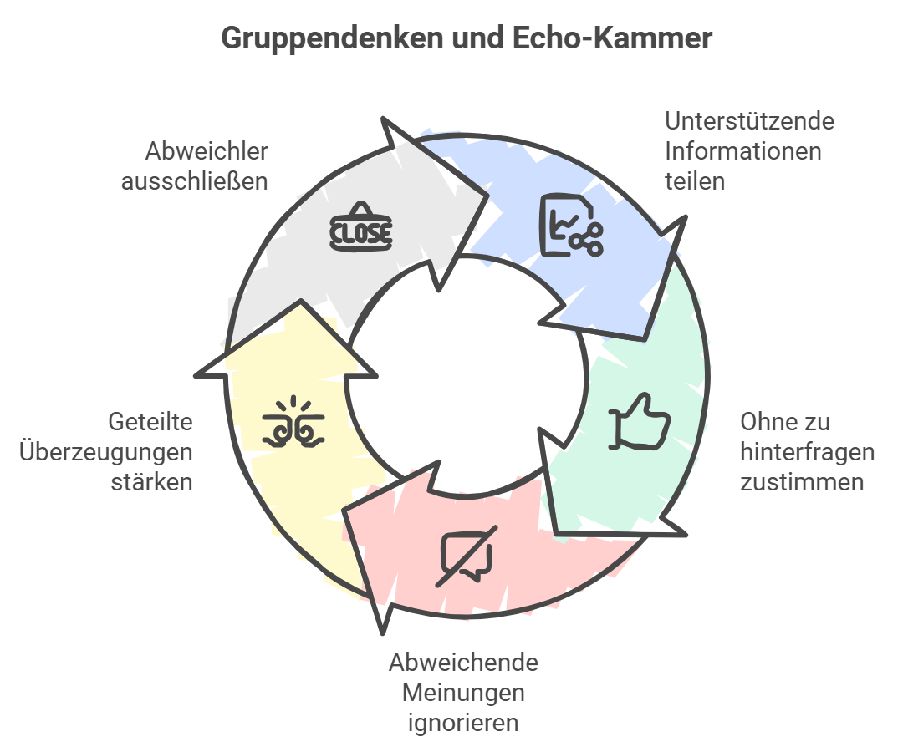
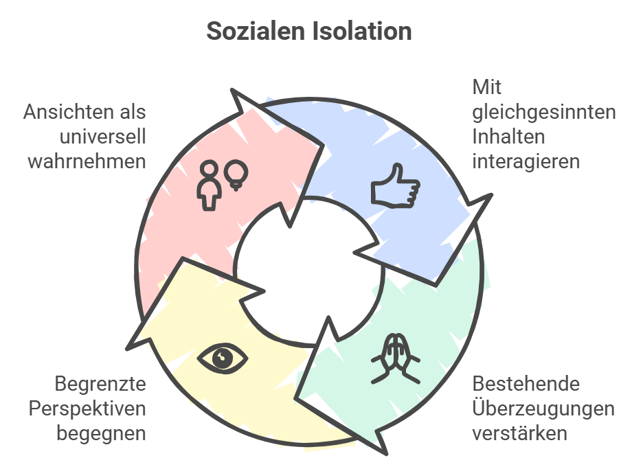
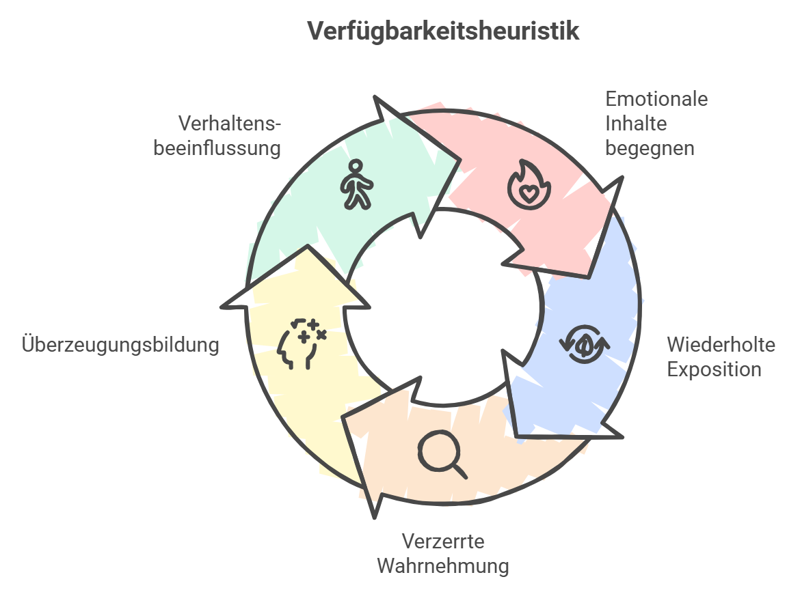

Die fünf Mechanismen der Filterblase im Überblick
Die 1980er – und warum die Blase kein neues Phänomen ist
Das Phänomen der Filterblase ist kein neues Konzept, sondern ein grundlegendes menschliches Verhalten, das sowohl in der analogen Welt der Teenager-Zeit der 1980er Jahre als auch in der heutigen digitalen Social-Media-Welt auftritt. Damals stammten Informationen hauptsächlich aus regionalen Zeitungen, drei TV-Sendern oder dem persönlichen Umfeld – alternative Sichtweisen fanden kaum Gehör. Familie, Freundeskreis, Schützenverein und Fußballclub verstärkten diesen Effekt. Meinungen wiederholten sich, eine geschlossene Weltanschauung entstand – ein analoger „Echokammer-Effekt".
In der analogen Welt war der Zugang zu Informationen stark begrenzt, während Social Media theoretisch unbegrenzte Vielfalt bietet. Allerdings personalisieren Algorithmen Inhalte gezielt nach Nutzerverhalten, wodurch individuelle Filterblasen entstehen – dynamischer, aber auch manipulativer. Informationen verbreiten sich heute in Sekundenschnelle, Menschen beeinflussen durch Likes und Shares aktiv, welche Inhalte dominieren. Damit sind digitale Filterblasen nicht nur schneller und individueller, sondern auch schwerer zu durchbrechen.
Der Auslöser: Trump
Obwohl ich mich für relativ gebildet und informiert halte, hat mir die Wahl Donald Trumps vor Augen geführt, dass auch ich mich in einer Blase befand, in der ein Wahlsieg als unvorstellbar galt. Das war der Auslöser, mich damit näher zu beschäftigen – und Material für Lehrkräfte zu liefern, um das Thema auch im Unterricht anzugehen.
Menschen suchen Informationen, die zu ihrem Weltbild passen, und meiden Unbequemes – analog wie digital. Das ist universelles menschliches Verhalten.
1. Bestätigungsfehler (Confirmation Bias) und Selektive Aufmerksamkeit

Der Bestätigungsfehler führt dazu, dass Menschen Informationen bevorzugen, die ihre bestehenden Überzeugungen stützen, während sie andere ignorieren. Auf Social Media bedeutet das: Nutzer liken, teilen und kommentieren eher Beiträge, die ihre eigenen Meinungen bestätigen – gegensätzliche Meinungen werden ignoriert oder als „Fake News" abgetan.
Beispiele aus dem Alltag:
- Eine Schülerin, die einem bestimmten Promi gegenüber unkritisch eingestellt ist, folgt nur Seiten, die ihn loben. Kritische Berichte überliest sie oder wertet sie als unwahr.
- Ein Jugendlicher, der den Klimawandel für einen Betrug hält, folgt ausschließlich Quellen, die wissenschaftlich unbewiesene Theorien verbreiten. Studien, die das Gegenteil belegen, werden als Teil einer „globalen Agenda" abgelehnt.
- Folge bewusst Accounts, die unterschiedliche Meinungen vertreten – auch wenn sie dir widersprechen.
- Stelle dir regelmäßig die Frage: „Was, wenn ich falsch liege?"
- Nutze Faktenchecks (z. B. Correctiv, dpa-Faktencheck) bevor du Inhalte teilst.
2. Kognitive Dissonanz

Kognitive Dissonanz beschreibt das Unbehagen, das entsteht, wenn Menschen mit Informationen konfrontiert werden, die ihren Überzeugungen widersprechen. Auf Social Media äußert sich das durch selektives Scrollen, Unfollowing oder Blocking – um das Unbehagen zu vermeiden, anstatt es als Lernchance zu nutzen.
Beispiele aus dem Alltag:
- Ein Jugendlicher, der überzeugt ist, dass Videospiele die Schulleistung nicht beeinträchtigen, blockiert Quellen, die Studien zum Gegenteil teilen.
- Ein Anhänger einer extremen politischen Bewegung beschuldigt Medien der Voreingenommenheit, wenn diese friedliche Gegendemonstrationen zeigen.
- Erkenne, dass Unbehagen bei widersprüchlichen Infos normal ist – und nutze es als Anlass zum Nachdenken.
- Tausche dich mit Andersdenkenden aus und höre aktiv zu, ohne sofort zu widersprechen.
- Vor dem Wegklicken: Versuche drei Gründe zu finden, warum die andere Position Sinn ergeben könnte.
3. Gruppendenken und Echo-Kammer

Gruppendenken tritt auf, wenn Gruppen den Konsens über kritisches Denken stellen, um Konflikte zu vermeiden. Der Echo Chamber-Effekt verstärkt das: Informationen und Überzeugungen werden innerhalb der Gruppe ständig wiederholt, während gegensätzliche Meinungen ausgeblendet werden. Algorithmen fördern diesen Effekt, indem sie ähnliche Inhalte priorisieren – mit wachsender Polarisierung als Folge.
Beispiele aus dem Alltag:
- Eine Schulklasse teilt zu einem politischen Thema alle dieselbe Meinung. Artikel, die diese bestätigen, werden geteilt und bejubelt – ohne Hinterfragen. Wer widerspricht, wird ignoriert oder verspottet.
- Eine Online-Community, die Verschwörungstheorien diskutiert, schließt jeden aus, der Fakten einbringt. Die extremen Ansichten werden dadurch immer gefestigter.
- Tritt Gruppen und Foren bei, die unterschiedliche Perspektiven bieten.
- Stelle in deiner Gruppe aktiv kritische Fragen nach Belegen und Argumenten.
- Starte regelmäßige „Perspektivwechsel-Challenges" – recherchiere bewusst andere Standpunkte.
4. Soziale Isolation

Die digitale Segregation in Meinungsblasen kann zu faktischer sozialer Isolation führen. Jugendliche bewegen sich zunehmend in homogenen Online-Gemeinschaften und verlieren den Kontakt zu alternativen Perspektiven und Lebenswelten – was Empathie und interkulturelle Kompetenz erschwert.
Beispiele aus dem Alltag:
- Ein Jugendlicher, der ausschließlich einer bestimmten Subkultur folgt, glaubt, seine Interessen repräsentierten den Mainstream – weil er kaum noch andere Inhalte sieht.
- Ein Jugendlicher in homophoben Online-Foren hält seine ablehnende Haltung für weit verbreitet und normal, weil ihm kein Gegengewicht begegnet.
- Informiere dich regelmäßig über unabhängige Medien außerhalb von Social Media.
- Sprich mit Freunden und Familie über Themen, die du online siehst – und höre ihre Meinung an.
- Plane regelmäßige „Digital Detox"-Tage, an denen reale soziale Interaktionen im Vordergrund stehen.
5. Verfügbarkeitsheuristik

Die Verfügbarkeitsheuristik ist eine mentale Abkürzung: Menschen schätzen die Häufigkeit von Ereignissen basierend auf den Informationen ein, die ihnen gedanklich am präsentesten sind. Auf Social Media sind das oft die emotionalsten oder meistgeteilten Inhalte – was zu verzerrten Risikowahrnehmungen führt.
Beispiele aus dem Alltag:
- Eine Schülerin folgt mehreren Fitness-Influencern und beginnt zu glauben, alle beschäftigten sich mit Kalorien und Diäten – obwohl das in ihrem Alltag kein Thema ist.
- Ein Jugendlicher sieht wiederholt Videos über Kriminalität einer bestimmten Gruppe und hält diese für überdurchschnittlich kriminell – obwohl Statistiken das Gegenteil zeigen.
- Erkenne, dass Social Media dir oft die emotionalsten Inhalte zeigt – nicht die repräsentativsten.
- Vergleiche, was du online siehst, mit deiner eigenen Lebenswirklichkeit und dem Gespräch mit anderen.
- Nutze verlässliche Datenquellen (Statistikämter, Wissenschaftsmedien), um ein realistischeres Bild zu bekommen.